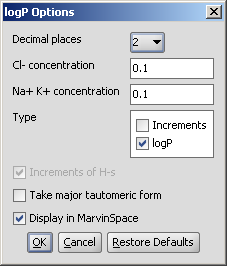
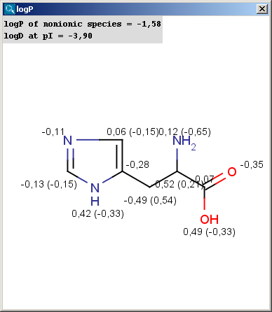
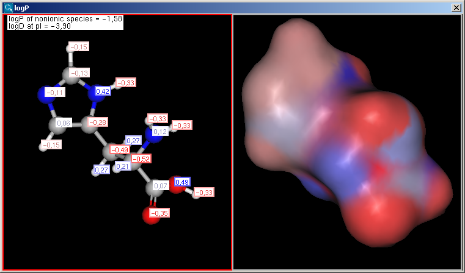
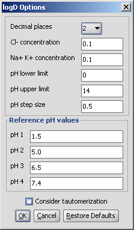
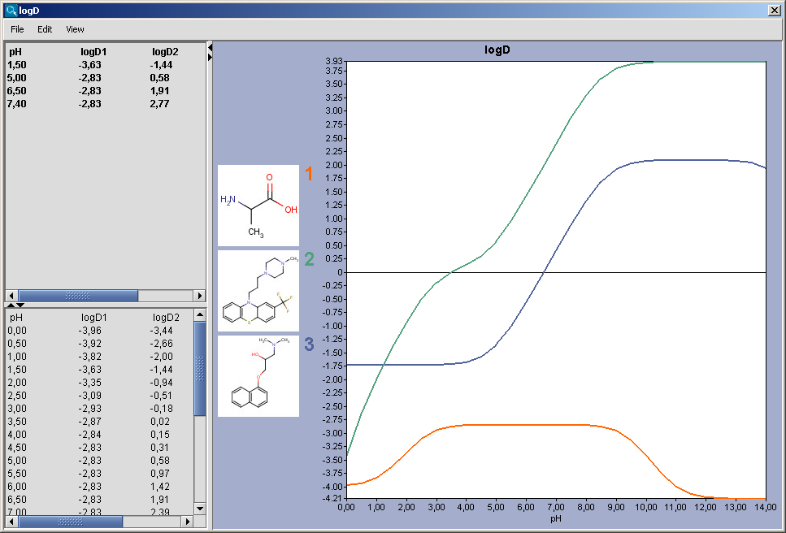

The logP plugin calculates the octanol/water partition
coefficient, which is used in QSAR analysis and rational drug design as
a measure of molecular hydrophobicity. The calculation method is based
on the publication of Viswanadhan et al. (see Ref.1.)
The logP value of a molecule is composed of the increment values
of its atoms. The algorithm described in the paper was modified at
several points. Many atomic types were redefined to accommodate electron
delocalization. Contributions of ionic forms were added. The logP value
of zwitterions are calculated from the logD value at the isoelectric
point. The effect of hydrogen bonds on logP is considered if there is a
chance to form a six membered ring between suitable donor and acceptor
atoms. New atom types were introduced especially for sulfur, carbon,
nitrogen, and metal atoms.
Learn more about how the plugin calculates
logP.
Different calculation parameters can be set in the logP Options panel:
|  |
Decimal places: setting the number of decimal places with which the result value is given.
Cl- concentration: can be set between 0.1 and 0.25 mol/L.
Na+ K+ concentration: can be set between 0.1 and 0.25 mol/L.
Type
calculates the increments given by the atoms.
Increments of hydrogens: displays the increments given by hydrogens (in brackets).
Take major tautomeric form: the logP of the major tautomer will be calcutated.
Display in MarvinSpace: the result window opens as 3D MarvinSpace viewer. If unchecked, the results will be shown on a 2D picture.
The result of the calculation appears in a new window, either in a MarvinView (2D) window or a MarvinSpace (3D) window:
|  |  |
The result window shows the logP increments for each atom. The numbers in brackets refer to the logP increment sums of implicit H atoms, and displayed only if the "Increment of Hs" option is switched on in the logP Options panel.
Compounds having ionizable groups exist in solution as a mixture
of different ionic forms. The ionization of those groups, thus the ratio
of the ionic forms depends on the pH. Since logP describes the
hydrophobicity of one form only, the apparent logP value can be
different. The octanol-water distribution coefficient,
logD represents the compounds at any pH value (see Ref.2.).
Learn more about how the plugin calculates
logD.
Different calculation parameters can be set in the logP Options panel:
|  |
Decimal places: setting the number of decimal places with which the result value is given.
Cl- concentration: can be set between 0.1 and 0.25 mol/L.
Na+ K+ concentration: can be set between 0.1 and 0.25 mol/L.
pH limits, pH step size: defines the pH window in which the logD is calculated, with pH values starting from the lower limit incremented by the step size, the results given in table format and a chart.
Reference pH values: the logD at the given reference pH values are calculated, both pH and logD values with an accuracy of the decimal places value set.
|  |
The chart shows the logD(pH) curves for each molecule drawn in the sketcher. The molecule images are shown in the legend. When clicking on an image, the corresponding molecule is displayed in the upper-left viewer. The viewer can be detached from the chart panel by double clicking in it, or else by selecting Open Viewer from the View menu. The reference logD values originally shown can be restored by either clicking on the chart outside of the legend image areas, or else by selecting logD at reference pHs from the View menu.